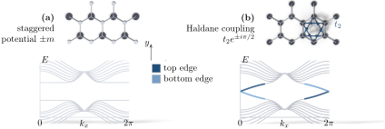
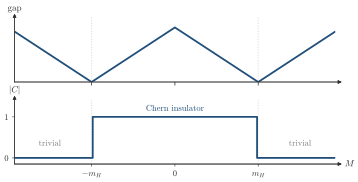

Page 12 of 16 of this session
3.10b The Haldane coupling and a real Chern insulator
Which mass term makes the two halves of \(K\) and \(K'\) add, so that they do not cancel? We will now see that an imaginary second-neighbor hopping does it. Its mass has opposite signs at the two Dirac points, and the result is \(C=\pm1\), which is a Chern insulator with no magnetic field.
\[H(k) = k_x\,\sigma_x + \lambda\, k_y\,\sigma_y + m\,\sigma_z, \tag{3.7}\]
\[C_{\text{Dirac}} = \frac{1}{2}\,\mathrm{sgn}(m)\,\mathrm{sgn}(\lambda). \tag{3.8}\]
These are the Hamiltonian of a gapped Dirac cone and its Chern number, from Section 3.10. The mass is \(m\), and the chirality \(\lambda=\pm1\) has opposite signs at the two Dirac points \(K\) and \(K'\) of the honeycomb lattice. A staggered potential has the same \(m\) at both points, so its two halves cancel.
The staggered potential gave \(C=0\), so it remains to see the second choice of the mass term. Now let us instead open the gap with a purely imaginary second-neighbor hopping, which is called the Haldane coupling. Physically, this term is a pattern of local orbital currents that circulate inside each hexagon, and it is odd under time reversal. This mass term changes sign between \(K\) and \(K'\) relative to \(\lambda\), so the two Dirac points now give Chern numbers of the same sign, which add and do not cancel. The result is \(C = \pm 1\), a real Chern insulator, built only from lattice hoppings and without any external magnetic field.
This was the first model with a finite and quantized Hall conductivity and zero net flux. It is the mechanism to open a gap in the Dirac cone of Section 2.11 that we were looking for. Figure 3.5 shows the two cases side by side, each on the lattice and in the spectrum of a ribbon, where only the Haldane case has edge states that cross the gap.
A gap can also be opened by combining an ordinary magnetization with spin-orbit coupling, which gives the same sign pattern as the Haldane term and an equivalent quantum anomalous Hall state. Both routes have material realizations. Physics similar to the Haldane model has been realized in twisted graphene bilayers on boron nitride, and the route with magnetism and spin-orbit coupling has been realized and measured in Cr-doped (Bi,Sb)\(_2\)Te\(_3\).

What happens when both mass terms are there? A staggered potential \(M\) gives the same mass at the two Dirac points. The Haldane coupling \(t_2\) gives the mass \(+m_H\) at one of them and \(-m_H\) at the other, so the two net masses are \(M+m_H\) and \(M-m_H\). When \(|M|\) is larger than \(|m_H|\) both masses have the same sign, and the two halves cancel as they did for the staggered potential alone.
The honeycomb lattice with the Haldane coupling \(t_2\) and a staggered potential \(M\) has the masses \(M+m_H\) and \(M-m_H\) at its two Dirac points, with \(m_H=3\sqrt{3}\,t_2\), and its Chern number is
\[\begin{aligned} |C| &= 1 &&\text{for}\ |M|<|m_H|,\\ C &= 0 &&\text{for}\ |M|>|m_H|. \end{aligned}\]
The first case is a Chern insulator with no magnetic field, and the second is an ordinary insulator. At \(M=0\) the gap is \(6\sqrt{3}\,|t_2|\) for small \(t_2\), which is \(|t_2|<1/3\sqrt3\approx0.19\) in units of the first-neighbor hopping. \(C\) changes sign with \(t_2\), meaning when the currents circulate in the opposite direction.
The steps From the imaginary second-neighbor hopping to the masses of the two Dirac points
A second-neighbor hop joins two sites of the same sublattice, so in the Bloch Hamiltonian it is a diagonal term. We take the three second-neighbor vectors \(\mathbf b_1,\mathbf b_2,\mathbf b_3\) that go around a hexagon in one direction. They add to zero, and their length is the lattice constant. On the sublattice \(A\) the hopping along each \(\mathbf b_i\) is \(i\,t_2\), and the hopping back is \(-i\,t_2\), so that the Hamiltonian is Hermitian. The simplest piece is one such pair of hops, which gives
\[i\,t_2\,e^{i\mathbf k\cdot\mathbf b_i} - i\,t_2\,e^{-i\mathbf k\cdot\mathbf b_i} = -2\,t_2\,\sin(\mathbf k\cdot\mathbf b_i).\]
A real hopping would give a cosine, which is even in \(\mathbf k\). The imaginary hopping gives a sine, which is odd. On the sublattice \(B\) the currents circulate in the same sense around the hexagon, and this is the opposite direction along the same vectors, so the hopping along \(\mathbf b_i\) is \(-i\,t_2\) there. The whole term is then
\[H_H(\mathbf k) = -2\,t_2\sum_{i=1}^{3}\sin(\mathbf k\cdot\mathbf b_i)\;\sigma_z .\]
The second step is the value at the Dirac points. At \(K\) the three phases are the same, \(\mathbf K\cdot\mathbf b_i=-2\pi/3\) up to a multiple of \(2\pi\), so each sine is \(-\sqrt3/2\) and
\[H_H(K) = -2\,t_2\cdot 3\cdot\Big(-\frac{\sqrt3}{2}\Big)\,\sigma_z = 3\sqrt3\,t_2\,\sigma_z = m_H\,\sigma_z .\]
The other Dirac point is \(K'=-K\), and the sine is odd, so \(H_H(K')=-m_H\,\sigma_z\). For \(t_2=0.1\) this is \(m_H=0.52\) and a gap \(2m_H=1.04\), in units of the first-neighbor hopping. The name of the two points does not matter, since \(\lambda\) and the mass change sign together when we exchange them. What changes the sign of \(C\) is the sign of \(t_2\).
The third step adds the staggered potential, which is \(M\sigma_z\) at every \(\mathbf k\). The first-neighbor hopping vanishes at the two Dirac points, so the masses are \(M+m_H\) at \(K\) and \(M-m_H\) at \(K'\). The chirality \(\lambda\) has opposite signs at \(K\) and \(K'\), so equation (3.8) gives
\[C = \pm\,\frac{\mathrm{sgn}(M+m_H)-\mathrm{sgn}(M-m_H)}{2},\]
where the sign in front depends on which of the two points has \(\lambda=+1\). This is fixed by the first-neighbor term and by the sense of the vectors \(\mathbf b_i\), which we did not need here. The size is \(|C|=1\) for \(|M|<|m_H|\) and \(0\) for \(|M|>|m_H|\), and \(C\) changes sign with \(m_H\), which is with \(t_2\). The gap at the Dirac points is the smaller of the two, \(2\min(|M+m_H|,|M-m_H|)\), and it closes at \(M=\pm m_H\). It is the gap of the lattice as long as it is smaller than \(2\). This is the gap of the first-neighbor bands at the middle of an edge of the Brillouin zone, where the Haldane term vanishes. As a check, a sum of the Berry curvature on the lattice with \(t_2=0.1\) gives \(|C|=1.000\) for \(M=0.3\) and \(C=0.000\) for \(M=0.8\), with the gaps \(0.44\) and \(0.56\) that this formula gives.
We can follow this cancellation on the lattice. In Schematic 3.13 we keep the Haldane coupling fixed and we increase the staggered potential \(M\). The staggered potential \(M\), which Figure 3.5 writes as \(m\), gives the mass \(m\) of (3.7) with the same sign at both valleys. The Haldane coupling instead gives masses of opposite sign at \(K\) and \(K'\), and only this one gives \(C=\pm1\).

Notebook check-in: session3.ipynb, “The quantum anomalous Hall effect” (Core), “Edge states of the quantum anomalous Hall state” (Core) and “Topological phase transitions in the edge” (Core). Two more sections are challenges, “Topological states and topological invariants” (Challenge) and “Topological phase transitions in the bulk” (Challenge).
Build the honeycomb ribbon with the Haldane coupling and without magnetic field, and check that the same chiral edge states of Section 3.6 appear, as the argument above predicts. Then, in the exercise on the Berry curvature, integrate the curvature separately for the Haldane coupling and for a sublattice imbalance. You should find a non-zero net Chern number for the Haldane case and a vanishing one for the sublattice imbalance, which is the difference between cancellation and addition that we worked out around (3.8). Then combine both terms and change their relative strength, and follow where the bulk gap closes and then where the edge states do. This is the numerical version of the phase transition at \(t=1\) of Section 3.9, now in two dimensions. The Berry curvature of Schematic 3.5 and the ribbon spectra of Figure 3.5 come from this same computation.
The route with magnetism and spin-orbit coupling is measured through the Hall resistance, as the quantum Hall effect is, but at zero magnetic field. In thin films of Cr-doped (Bi,Sb)\(_2\)Te\(_3\) the Hall resistance at zero field reaches the quantized value \(h/e^2=25.8\) k\(\Omega\), which is \(|C|=1\) in (3.4), and the longitudinal resistance drops at the same time. The measurement is in this article. In films of V-doped (Bi,Sb)\(_2\)Te\(_3\) the Hall conductance of this state reaches \(0.9998\pm0.0006\) in units of \(e^2/h\) at \(25\) mK, as reported in this second article.
A honeycomb lattice has a Haldane coupling with mass \(m_H\) and a staggered potential \(M\). The masses at its two Dirac points are \(M+m_H\) and \(M-m_H\). We increase \(M\) from zero until \(M>m_H\). What happens to the Chern number?
Show the answers
- A. ✗ False
This is false. Take a Haldane mass \(0.5\) and a staggered potential \(1\). The masses at the two valleys are \(1.5\) and \(0.5\), both positive, so \(C=\tfrac12-\tfrac12=0\).
- B. ✗ False
This is false. The two masses add at one valley and subtract at the other. For a Haldane mass \(0.5\) and a staggered potential \(1\) they are \(1.5\) and \(0.5\). Each Dirac point gives at most \(\pm\tfrac12\), so the size of \(C\) is never larger than \(1\), and here it is \(\tfrac12-\tfrac12=0\).
- C. ✓ True
This is true. The gap closes at the valley with the mass \(M-m_H\) when \(M=m_H\). When the staggered potential wins, both masses have the same sign, and the two half-integers are opposite and cancel.
The Haldane coupling has zero net magnetic flux through the unit cell. It still gives \(C\neq 0\). Why?
Show the answers
- A. ✗ False
This is false. Take the loop of the six first-neighbor bonds around one hexagon. These hoppings are real, so the phase around the loop is zero. The complex phases are on the second-neighbor bonds, and the fluxes that they give add to zero over the unit cell.
- B. ✓ True
This is true. What matters is that time reversal is broken, and not that the field is nonzero. The imaginary second-neighbor hopping gives currents that circulate inside each hexagon and cancel on average.
- C. ✗ False
This is false. The staggered potential lives on the same bipartite honeycomb lattice and gives \(C=0\). For a potential of \(0.5\) the sum of the Berry curvature over a mesh of 60 by 60 points gives \(0.000\). The lattice alone cannot decide the Chern number.
The Haldane coupling gives the masses
\[m(K) = -m(K') = 3\sqrt3\,t_2\]
at the two Dirac points \(K\) and \(K'\) of the honeycomb lattice. Here \(t_2\) is the imaginary second-neighbor hopping. What is the gap for \(t_2=0.1\), in units of the first-neighbor hopping?
Show the answers
- A. ✗ False
This is false. The three second-neighbor hops of each sublattice add at the Dirac point, each with a factor \(\sqrt3/2\) from the sine. The bands of the lattice with \(t_2=0.1\) have a gap of \(1.04\) and not \(0.2\).
- B. ✗ False
This is false. This is the mass, and the gap of a Dirac cone is twice its mass, since the bands are \(\pm\sqrt{k^2+m^2}\). The two levels at \(K\) are at \(+0.52\) and \(-0.52\).
- C. ✓ True
This is true. The gap is \(2|m|\) at each Dirac point, and the two points have the same \(|m|\). A diagonalization on a k-mesh of the Brillouin zone gives \(1.04\).
Three ribbons of the honeycomb lattice have the same bulk gap, \(0.9\,t\). Here \(t\) is the first-neighbor hopping. Each picture shows the bands of one ribbon against the momentum \(k\) along it. Blue and red states sit at the two edges. Grey states are in the bulk. Which ribbon is a Chern insulator?
Show the answers
- A. ✓ True
This is true. Two branches cross the gap, one at each edge, with opposite slopes. These are the chiral edge states of \(|C|=1\). This ribbon has only the Haldane coupling, with the mass \(m_H=0.45\,t\).
- B. ✗ False
This is false. The gap is empty, so there is no edge state that crosses it. This ribbon has only a staggered potential \(M=0.45\,t\), which gives the same bulk gap \(2M=0.9\,t\) and \(C=0\).
- C. ✗ False
This is false. The gap is empty here too. This ribbon has the Haldane mass \(m_H=0.45\,t\) and a staggered potential \(M=0.9\,t\). The masses of the two valleys are \(1.35\,t\) and \(0.45\,t\), with the same sign, so \(C=0\), and the gap is again \(0.9\,t\).
In the Haldane model the second-neighbor hopping has a general phase, \(t_2\,e^{i\phi}\), and the case of this page is \(\phi=\pi/2\). Find the diagonal part of the Bloch Hamiltonian at the Dirac point \(K\) for a general \(\phi\), and the values of the staggered potential \(M\) where the Chern number changes. Use that the three second-neighbor vectors \(\mathbf b_i\) of the sublattice \(A\) have \(\mathbf K\cdot\mathbf b_i=-2\pi/3\) up to a multiple of \(2\pi\), and that on the sublattice \(B\) the phase of the hopping along \(\mathbf b_i\) is \(-\phi\).
Solution
On the sublattice \(A\) the hop along \(\mathbf b_i\) and the hop back give
\[t_2\,e^{i\phi}\,e^{i\mathbf k\cdot\mathbf b_i}+t_2\,e^{-i\phi}\,e^{-i\mathbf k\cdot\mathbf b_i} = 2\,t_2\cos(\mathbf k\cdot\mathbf b_i+\phi),\]
and on the sublattice \(B\) the same with \(-\phi\). At \(K\) the three vectors give the same term, so
\[H_{AA}(K) = 6\,t_2\cos\Big(\phi-\frac{2\pi}{3}\Big) = -3\,t_2\cos\phi+3\sqrt3\,t_2\sin\phi, \qquad H_{BB}(K) = -3\,t_2\cos\phi-3\sqrt3\,t_2\sin\phi .\]
The part that is the same on both sublattices, \(-3\,t_2\cos\phi\), moves the two levels together and opens no gap. The part with opposite signs is the mass, \(m_H=3\sqrt3\,t_2\sin\phi\). At \(K'=-K\) the phases are \(+2\pi/3\), which changes the sign of the sine term only, so the mass there is \(-m_H\). With the staggered potential the masses are \(M\pm m_H\), and the Chern number changes where one of them vanishes,
\[M=\pm\,3\sqrt3\,t_2\sin\phi .\]
Only the imaginary part of the hopping, \(t_2\sin\phi\), opens the topological gap, since it is the part that breaks time-reversal symmetry. A real second-neighbor hopping, with \(\phi=0\), moves the Dirac points in energy by \(-3\,t_2\) and leaves them gapless. So the real second-neighbor hopping of a honeycomb material such as graphene does not make it a Chern insulator. In a calculation the same result tells us how fine the k-mesh has to be. The mass \(3\sqrt3\,t_2|\sin\phi|\) is the width of the peaks of the Berry curvature, up to the velocity \(\sqrt3/2\) of the Dirac cone.
Try it. The cell fixes the Haldane coupling at 0.05 and increases the sublattice imbalance. The title of each panel gives the Chern number. It is 2 for the first two values of the imbalance and 0 for the last two, because both spin species count. Double the Haldane coupling to 0.1 and run the cell again. The jump of the Chern number needs about twice the imbalance, since the Haldane mass is twice as large. In pyqula the Haldane mass is 4.5 times the number given to add_haldane, so the jump is at an imbalance of 0.225 for 0.05 and of 0.45 for 0.1.
- In Section 4.19 the Haldane model is connected to the quantum Hall state without closing the gap, so the two are the same phase.
- In Section 4.20 Cr-doped (Bi,Sb)\(_2\)Te\(_3\) and twisted graphene on boron nitride realize this Chern insulator.
- In Section 6.16 a Dzyaloshinskii-Moriya interaction gives the magnons of a honeycomb magnet the same complex second-neighbor hopping.
- In Section 9.8 a vacancy in the Haldane model binds a state inside the gap.